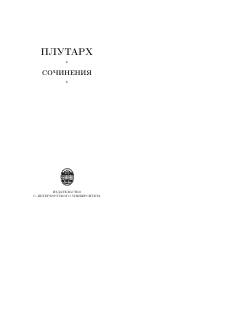

PVPlutarxning Platon asarlarini tahlil qiluvchi falsafiy traktatlari to'plami.
Ushbu asar qadimgi yunon faylasufi Plutarxning Platon asarlarini sharhlashga bag'ishlangan o'nta falsafiy savol va javoblarini o'z ichiga oladi. Kitobda muallif Platon matnlaridagi murakkab o'rinlarni tahlil qilib, ularga o'zining falsafiy yondashuvini taqdim etadi.